Content of type 'book'
Address to Pandrosion · Methodological Summary
Theorem (θεώρημα): Demonstrates a necessary consequence from given hypotheses.
Address to Pandrosion · Philological & Textual Notes
The addressee of Book III, Pandrosion, is addressed in Codex Vaticanus Graecus 218 (f. 1r) as ὦ κρατίστη Πανδροσίων. Federico Commandino emended κρατίστη to masculine κράτιστε, whereas Friedrich Hultsch restored the manuscript’s feminine form, confirming Pandrosion as a leading fourth-century woman mathematician in Alexandria.
Address to Pandrosion: Theorem, Problem, and Diorismos
Those who wish to distinguish more technically the subjects of inquiry in geometry, most worthy Pandrosion, think it right to call a problem (πρόβλημα) that in which something is proposed to be done and constructed, and a theorem (θεώρημα) that in which, certain things being supposed, what follows from them and invariably happens alongside them is contemplated— some of the ancients calling them all problems, and others calling them theorems. Now he who proposes a theorem, having seen in whatever manner what follows from it, rightly demands that we investigate this, and could not otherwise propose it soundly; whereas he who proposes a problem, if he be uninstructed and wholly a layman, even though he bid something impossible to be constructed, is pardonable and blameless. For it is the task of the investigator to determine (διορίσαι) this also: both what is possible and what is impossible, and, if possible, when, how, and in how many ways it is possible.
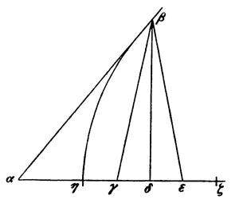
Mathematical Collection
Book & Unit
Preface on Bees · Historical & Philosophical Commentary
Pappus synthesizes biological teleology with Alexandrian geometry in this preface to Megethius (Hultsch I, pp. 304–308), noting that bees choose the hexagonal cell because only equilateral triangles, squares, and hexagons tile the plane.
Preface on Bees · Tessellation Invariants Summary
For regular polygons of \(n\) sides to tile around a common vertex, \(k \frac{(n-2)\times 180^\circ}{n} = 360^\circ \iff (n-2)(k-2) = 4\), yielding only triangles (\(n=3, k=6\)), squares (\(n=4, k=4\)), and hexagons (\(n=6, k=3\)).
Preface to Hermodorus · Analysis, Synthesis & Curriculum Summary
Analysis (ἀνάλυσις): Heuristic backward resolution from target to known truths (divided into theoretical and problematic branches).
Preface to Hermodorus · Carpus & Vatican MS 218 Notes
Pappus cites Carpus of Antioch to refute Plutarch’s claim (Life of Marcellus) that Archimedes despised practical mechanics. Book VIII begins on folio 207r of Codex Vaticanus Graecus 218 (Hultsch Vol. III, p. 1022, folio 0031).
Preface to Hermodorus · Historical & Canon Notes
Book VII is dedicated to Pappus’s son (or pupil) Hermodorus (Hultsch II, pp. 634–636, folios hultsch_1877_vol2:0179 and hultsch_1877_vol2:0181). Of the 33 books cataloged by Pappus, only Euclid's Data and Apollonius's Conics (Books I–IV in Greek, V–VII in Arabic) survive complete, making Book VII’s 242 lemmas our indispensable witness to the lost works.
Preface to Hermodorus · Mechanics Summary
Following Hero of Alexandria, mechanics divides into theoretical (λογικόν) and manual (χειρουργικόν), encompassing five engineering disciplines: machine-makers, engine-makers, water-lifters, automata-builders, and sphere-makers.
Preface to Hermodorus: Analysis, Synthesis, and the Thirty-Three Books
1. That which is called the Treasury of Analysis, my son Hermodorus, is—to speak concisely—a special body of doctrine prepared after the composition of the common Elements for those who wish to acquire in geometric inquiries the power of discovering solutions to the problems proposed to them; and being useful for this purpose alone, it was written by three men—Euclid the writer of the Elements, Apollonius of Perga, and Aristaeus the Elder—and proceeds by way of analysis and synthesis.
Preface to Hermodorus: Architectonic Mechanics
It contains varied and choice mechanical problems.
Preface to Megethius: On the Sagacity of Bees
Collection of Pappus of Alexandria, Book V. It contains comparisons of plane figures having equal perimeter with one another and with the circle, and comparisons of solid figures having equal surface with one another and with the sphere.
Proposition 1 · Exact Symbolic Invariants & 10-Variable Ring
Given: Arbitrary triangle \(\triangle ABC\) with vertices \(A, B, C\) and arbitrary lateral vectors \(\vec{u}, \vec{w}\) defining parallelograms \(ABDE\) and \(ACFG\).
Proposition 1 · Historical & Modern Affine Commentary
Whereas Elements I.47 requires a right angle and squares, and Elements VI.31 retains the right angle while generalizing to similar figures, Pappus in Book IV.1 drops both restrictions simultaneously.
Proposition 14 · Historical Provenance Notes
Pappus emphasizes the antiquity (ἐν τισιν ἀρχαία πρότασις) of the circle-chain theorem on the arbelos, pointing back to the Hellenistic tradition of Archimedes (Book of Lemmas).
Proposition 14 · Theorem Statement Summary
Invariant: \(y_n = n \cdot d_n = 2n\,r_n\) for all \(n \ge 1\).
Proposition 14: The Ancient Theorem on the Arbelos
Proposition 1: Generalized Parallelogram Area Theorem
Προοίμιον πρὸς Μεγέθιον · Περὶ τῆς τῶν μελισσῶν προνοίας
ΠΑΠΠΟΥ ΑΛΕΞΑΝΔΡΕΩΣ ΣΥΝΑΓΩΓΗΣ Ε.
Προοίμιον πρὸς Πανδροσίονα · Θεώρημα, Πρόβλημα καὶ Διορισμός
ΠΑΠΠΟΥ ΑΛΕΞΑΝΔΡΕΩΣ ΣΥΝΑΓΩΓΗΣ Γ.
Προοίμιον πρὸς Ἑρμόδωρον · Μηχανικὴ θεωρία
ΠΑΠΠΟΥ ΑΛΕΞΑΝΔΡΕΩΣ ΣΥΝΑΓΩΓΗΣ Η.
Προοίμιον πρὸς Ἑρμόδωρον · Ἀνάλυσις καὶ Σύνθεσις
ΠΑΠΠΟΥ ΑΛΕΞΑΝΔΡΕΩΣ ΣΥΝΑΓΩΓΗΣ Ζ.
Πρότασις α΄ · Καθολικὸν θεώρημα τῶν παραλληλογράμμων
1. α΄. Ἐὰν ᾖ τρίγωνον τὸ ΑΒΓ (ABC), καὶ ἀπὸ τῶν ΑΒ ΒΓ ἀναγραφῇ τυχόντα παραλληλόγραμμα τὰ ΑΒΔΕ (ABDE) ΒΓΖΗ (ACFG), καὶ αἱ ΔΕ (DE) ΖΗ (FG) ἐκβληθῶσιν ἐπὶ τὸ Θ (H), καὶ ἐπιζευχθῇ ἡ ΘΒ (HA), γίνεται τὰ ΑΒΔΕ ΒΓΖΗ παραλληλόγραμμα ἴσα τῷ ὑπὸ τῶν ΑΓ ΘΒ περιεχομένῳ παραλληλογράμμῳ (BCML) ἐν γωνίᾳ ἥ ἐστιν ἴση συναμφοτέρῳ τῇ ὑπὸ ΒΑΓ ΔΘΒ.
Πρότασις ιδ΄ · Ἡ ἀρχαία πρότασις περὶ τοῦ ἀρβήλου
19. ιδ΄. Φέρεταί τις ἐν τισιν ἀρχαία πρότασις τοιαύτη· ὑποκείσθω τρία ἡμικύκλια ἐφαπτόμενα ἀλλήλων τὰ ΑΒΓ ΑΔΕ ΕΖΓ, καὶ εἰς τὸ μεταξὺ τῶν περιφερειῶν αὐτῶν χωρίον, ὃ δὴ καλοῦσιν ἄρβηλον, ἐγγεγράφθωσαν κύκλοι ἐφαπτόμενοι τῶν τε ἡμικυκλίων καὶ ἀλλήλων ὁσοιδηποτοῦν, ὡς οἱ περὶ κέντρα τὰ Η Θ Κ Λ· δεῖξαι τὴν μὲν ἀπὸ τοῦ Η κέντρου κάθετον ἐπὶ τὴν ΑΓ ἴσην τῇ διαμέτρῳ τοῦ περὶ τὸ Η κύκλου, τὴν δʼ ἀπὸ τοῦ Θ κάθετον διπλασίαν τῆς διαμέτρου τοῦ περὶ τὸ Θ κύκλου, τὴν δʼ ἀπὸ τοῦ Κ κάθετον τριπλασίαν, καὶ τὰς ἑξῆς καθέτους τῶν οἰκείων διαμέτρων πολλαπλασίας κατὰ τοὺς ἑξῆς μονάδι ἀλλήλων ὑπερέχοντας ἀριθμοὺς ἐπʼ ἄπειρον γινομένης τῆς τῶν κύκλων ἐγγραφῆς. δειχθήσεται δὲ πρότερον τὰ λαμβανόμενα.
Arbelos Circle Chain · Inversive Geometry & Historical Notes
While modern geometers prove \(y_n = n\,d_n\) by circular inversion centered at \(A\), Pappus establishes the entire chain purely synthetically via Props. 15–17 without departing from Euclidean tangents and power-of-a-point ratios (Elements III.36). Modern treatments call these Pappus–Steiner chains (after Jakob Steiner).
Arbelos Circle Chain · Section Summary
Prop. 14: Enunciation of the ancient altitude law \(y_n = n\,d_n\) and scope (internal and external arbelos).
Arbelos Circle Chain: Propositions 14–18
19. (14) There is handed down among certain writers an ancient proposition of the following kind: let three semicircles tangent to one another be supposed, ABG, ADE, and EZG, and into the space between their circumferences, which they call the arbelos, let circles be inscribed tangent both to the semicircles and to one another, as many as one may please; the perpendicular dropped from the center of the \(n\)-th circle equals \(n\) times its own diameter:
Center of Gravity & Prop. 1 · Archimedean Notes
Unlike Archimedes’s Plane Equilibria I, which takes centers of gravity axiomatically as postulates, Pappus supplies an explicit operational definition of center of gravity (Ch. 5) preserved only here in Synagoge VIII.
Center of Gravity & Prop. 1 · Summary
Definition: Suspension point such that the body remains at rest in every rotational orientation without tilting.
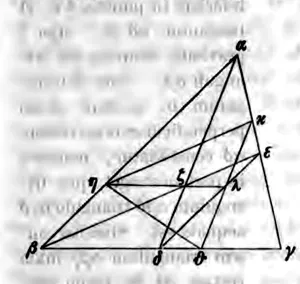
Center of Gravity and Proposition 1: Triangle Medians
5. What the heavy and the light are, and what is the cause of the upward and downward motion of bodies, and what notion “up” and “down” convey and by what boundaries they are defined, need not be stated by us at present, since these matters have been made clear in the mathematical writings by Ptolemy; but what the center of gravity of each body is and what it signifies, which is the principle and element of the centrobaric treatise, from which the remaining parts of mechanics also depend, must be stated; for from this, I think, the remaining things studied in the treatise will also be clear. We say that the center of gravity of each body is a certain point lying within it, from which if the weight be conceived as suspended, it remains at rest while borne and preserves its original orientation [without turning over in its motion]. And this point is found to belong not only to regularly shaped bodies, but also to irregularly shaped ones, being investigated by some such method as this.
Multi-Line Locus · Historical Notes on Descartes
In Book I of La Géométrie (1637), René Descartes took Pappus’s statement of the \(n\)-line locus problem (read through Commandino's 1588 Latin edition) as the benchmark test for his coordinate method, showing that the \(n\)-line locus defines algebraic curves of degree \(\lceil n/2 \rceil\).
Proposition 1 · Apothem Monotonicity Summary
\(a_n = \frac{P}{2n \tan(\pi/n)}\) increases monotonically with \(n \ge 3\).
Proposition 1 · Historical Commentary Notes
Pappus adapts Zenodorus, structuring Prop. 1 around equal-perimeter apothem comparison backed by the tangent-ratio lemma in his Lemmas on Spherics (cf. Elements VI, Synagoge VI).
Proposition 15 · Apollonian Tangency Notes
This lemma corresponds closely to the homothety lemmas preserved in Book VII for Apollonius's lost treatise On Tangencies (Ἐπαφαί).
Proposition 15 · Homothetic Pole Summary
The chord of contact between two tangent circles and a third tangent circle always passes through their internal or external center of similitude (homothety), giving \(KE \cdot E\Lambda = EB^2\) by [III.36].
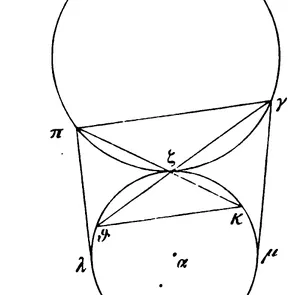
Proposition 15: Tangent Circles and Radical Axis
Proposition 1: Isoperimetric Regular Polygons
The Three-, Four-, and Multi-Line Locus Problem
33. Thus far Apollonius. As for the locus on three and four lines which he says in the third book was not completed by Euclid, neither he himself nor anyone else would have been able [nor even to add a small part to what was written by Euclid] by means of only the conics already demonstrated up to the time of Euclid, as he himself bears witness when he says that it is impossible for it to be completed without what he was compelled to set out beforehand. 34. [Now Euclid, accepting Aristaeus as worthy on account of the conics he had already handed down, and not anticipating or not wishing
The Threefold Hierarchy of Loci: Plane, Solid, and Linear
20. The ancients say that there are three genera of problems in geometry, and that some of them are called plane, others solid, and others linear. Those which can be solved by means of a straight line and a circle’s circumference are reasonably called plane (ἐπίπεδα), for the lines through which such problems are solved have their generation in a plane. All problems solved by taking one or more of the sections of the cone into the discovery are called solid (στερεά), for to the construction it is necessary to make use of surfaces of solid figures, I mean conic surfaces. A third genus still remains, which is called linear (γραμμικόν): for other lines besides those mentioned are taken for the construction, having a more varied and constrained generation, such as spirals, quadratrices, conchoids, and cissoids, possessing many paradoxical properties.
Three- and Multi-Line Locus · Summary
3-Line Locus: \(d_1 \cdot d_2 = k \cdot d_3^2\) (conic section).
Threefold Hierarchy of Loci · Epistemological Commentary
Pappus’s warning against solving a problem out of an alien genus (ἐξ ἀνοικείου γένους) anticipates modern Galois field-extension classification: plane problems correspond to quadratic tower extensions \(\mathbb{Q}(\sqrt{\cdot})\), whereas solid problems correspond to irreducible cubics and quartics solvable by intersections of conics. Pappus specifically reproves Apollonius (Conics V) and Archimedes (On Spirals) for invoking higher instruments where elementary ones suffice.
Διαίρεσις τῶν τριῶν γενῶν · Ἐπίπεδα, Στερεὰ καὶ Γραμμικά
20. Τῶν ἐν γεωμετρίᾳ προβλημάτων οἱ παλαιοὶ τρία γένη φασὶν εἶναι, καὶ τὰ μὲν αὐτῶν ἐπίπεδα καλεῖσθαι, τὰ δὲ στερεά, τὰ δὲ γραμμικά. τὰ μὲν οὖν διʼ εὐθείας καὶ κύκλου περιφερείας δυνάμενα λύεσθαι λέγοιτο ἂν εἰκότως ἐπίπεδα· καὶ γὰρ αἱ γραμμαὶ διʼ ὧν λύεται τὰ τοιαῦτα προβλήματα τὴν γένεσιν ἔχουσιν ἐν ἐπιπέδῳ. ὅσα δὲ προβλήματα λύεται παραλαμβανομένης εἰς τὴν εὕρεσιν μιᾶς τῶν τοῦ κώνου τομῶν ἢ πλειόνων, ταῦτα στερεὰ κέκληται· πρὸς γὰρ τὴν κατασκευὴν ἀναγκαῖόν ἐστι χρήσασθαι στερεῶν σχημάτων ἐπιφανείαις, λέγω δὲ ταῖς κωνικαῖς. τρίτον δʼ ἔτι καταλείπεται γένος ὃ καλεῖται γραμμικόν· γραμμαὶ γὰρ ἕτεραι παρὰ τὰς εἰρημένας εἰς τὴν κατασκευὴν λαμβάνονται ποικιλωτέραν καὶ βεβιασμένην ἔχουσαι τὴν γένεσιν, ὁποῖαι τυγχάνουσιν αἱ ἕλικες καὶ τετραγωνίζουσαι καὶ κοχλοειδεῖς καὶ κισσοειδεῖς, πολλὰ καὶ παράδοξα περὶ αὐτὰς ἔχουσαι συμπτώματα.
Προτάσεις ιδ΄–ιη΄ · Ἡ ἀρχαία πρότασις περὶ τοῦ ἀρβήλου
19. ιδ΄. Φέρεταί τις ἐν τισιν ἀρχαία πρότασις τοιαύτη· ὑποκείσθω τρία ἡμικύκλια ἐφαπτόμενα ἀλλήλων τὰ ΑΒΓ ((O0, A)) ΑΔΕ ((O1, A)) ΕΖΓ ((O2, D)), καὶ εἰς τὸ μεταξὺ τῶν περιφερειῶν αὐτῶν χωρίον, ὃ δὴ καλοῦσιν ἄρβηλον, ἐγγεγράφθωσαν κύκλοι ἐφαπτόμενοι τῶν τε ἡμικυκλίων καὶ ἀλλήλων ὁσοιδηποτοῦν· δειχθήσεται δὲ πρότερον τὰ λαμβανόμενα.
Πρότασις α΄ · Τῶν ἰσοπεριμέτρων πολυγώνων μεῖζον τὸ πολυγωνιώτερον
4. α΄. Ἔστω δύο πολύγωνα ἰσόπλευρά τε καὶ ἰσογώνια τὰ ΑΒΓ ΔΕΖ, καὶ ἔστωσαν ἴσαι μὲν αὑτῶν αἱ περίμετροι, πολυγωνότερον δὲ τὸ ΔΕΖ· λέγω ὅτι τὸ ΔΕΖ μεῖζον τοῦ ΓΑΒ.
Πρότασις ιε΄ · Περὶ ἐφαπτομένων κύκλων
20. ιε΄. Ἔστωσαν δύο κύκλοι οἱ ΖΒ ΒΜ περὶ κέντρα τὰ Α Γ ἐφαπτόμενοι ἀλλήλων κατὰ τὸ Β, καὶ μείζων ἔστω ὁ ΒΜ, ἄλλος δέ τις ἐφαπτόμενος αὐτῶν κατὰ τὰ Κ Λ περὶ κέντρον τὸ Η ὁ ΚΛ, καὶ ἐπεζεύχθωσαν αἱ ΓΗ ΑΗ
Ὁ ἐπὶ τρεῖς, τέσσαρας καὶ πλείους γραμμὰς τόπος
33. Ἀπολλώνιος μὲν ταῦτα. ὃν δέ φησιν ἐν τῷ τρίτῳ τόπον ἐπὶ γ΄ καὶ δ΄ γραμμὰς μὴ τετελειῶσθαι ὑπὸ Εὐκλείδου, οὐδʼ ἂν αὐτὸς ἠδυνήθη οὐδʼ ἄλλος οὐδείς [ἀλλʼ οὐδὲ μικρόν τι προσθεῖναι τοῖς ὑπὸ Εὐκλείδου γραφεῖσιν] διά γε μόνων τῶν προδεδειγμένων ἤδη κωνικῶν ἄχρι τῶν κατʼ Εὐκλείδην, ὡς καὶ αὐτὸς μαρτυρεῖ λέγων ἀδύνατον εἶναι τελειωθῆναι χωρὶς ὧν αὐτὸς προγράφειν ἠναγκάσθη. 34. [ὁ δὲ Εὐκλείδης ἀποδεχόμενος τὸν Ἀρισταῖον ἄξιον ὄντα ἐφʼ οἷς ἤδη παραδεδώκει κωνικοῖς, καὶ μὴ φθάσας ἢ μὴ θελήσας ἐπικαταβάλλεσθαι τούτων τὴν αὐτὴν πραγματείαν,
Ὅρος κέντρου βάρους καὶ Πρότασις α΄
5. Τί μὲν οὖν ἐστιν τὸ βαρὺ καὶ τὸ κοῦφον, καὶ τίς αἰτία τῆς ἄνω καὶ κάτω τοῖς σώμασι φορᾶς, καὶ αὐτό γε τὸ ἄνω καὶ κάτω τίνος ἐννοίας ἔχεται καὶ τίσιν ἀφώρισται πέρασιν, οὐδὲν δεῖ λέγεσθαι παρ᾽ ἡμῶν τὸ νῦν, ἐπειδὴ περὶ τούτων ἐν τοῖς μαθηματικοῖς ὑπὸ τοῦ Πτολεμαίου δεδήλωται, τὸ δὲ κέντρον τοῦ βάρους ἑκάστου σώματος, ὃ τῆς κεντροβαρικῆς πραγματείας ἀρχὴ καὶ στοιχεῖόν ἐστιν, ἐξ ἧς καὶ τὰ λοιπὰ μέρη τῆς μηχανικῆς ἀνήρηται, τί ποτ᾽ ἐστὶν καὶ τί βούλεται λεκτέον· ἐκ τούτου γάρ, οἶμαι, καὶ τὰ λοιπὰ τῶν ἐν τῇ πραγματείᾳ θεωρουμένων ἔσται σαφῆ. λέγομεν δὲ κέντρον βάρους ἑκάστου σώματος εἶναι σημεῖόν τι κείμενον ἐντός, ἀφ᾽ οὗ κατ᾽ ἐπίνοιαν ἀρτηθὲν τὸ βάρος ἠρεμεῖ φερόμενον καὶ φυλάσσει τὴν ἐξ ἀρχῆς θέσιν [οὐ μὴ περιτρεπόμενον ἐν τῇ φορᾷ]. τοῦτο δὲ τὸ σημεῖον οὐ μόνον ἐν τοῖς τεταγμένοις ἀλλὰ κἀν τοῖς ἀτάκτως ἐσχηματισμένοις εὑρίσκεται σώμασιν ὑπάρχον, ἐφόδῳ τινὶ θεωρούμενον τοιαύτῃ.
Book III · Problem Hierarchy & The Three Means
“Those of the ancients who wished to examine geometric inquiries with precision, most noble Pandrosion, judged it necessary to distinguish a problem from a theorem.”
—Pappus of Alexandria, Synagoge Book III, Chapter 1
Cube Duplication · Instrumental History Notes
Pappus preserves Eratosthenes’s famous method alongside Hero’s and Nicomedes’s constructions, noting explicitly that although these constructions use sliding rules and pivoted gauges rather than compasses and straightedges, they achieve the exact cubic proportion \(x^3 = a^2 b\) where Pandrosion’s student had offered only a flawed plane construction.
Cube Duplication · Summary of Mechanical Methods
Inserting \(x, y\) in continued proportion \(a : x = x : y = y : b\) reduces cube duplication (\(b = 2a \implies x^3 = 2a^3\)) to an algebraic degree-3 problem:
Four Constructions for Two Mean Proportionals
22. We shall therefore set forth four constructions of it with some elaboration of my own: first that of Eratosthenes, second that of Nicomedes, third that of Hero, which is especially suited to manual practice for those who wish to build, and last the one discovered by us. [For of any solid, another solid similar to the given one is constructed in the given ratio if two mean proportionals in continued proportion be taken between two given straight lines, as Hero says in his Mechanics and Catapult Treatises.]
Pappus–Guldinus Centroid Theorem · Authenticity Notes
Paul Guldin published this theorem in Centrobaryca (1640). Although early critics questioned whether the sentence was a late scholium in Commandino's 1588 translation (and Hultsch bracketed Chs. 41–42 in Hultsch II, pp. 680–682, folios hultsch_1877_vol2:0225 and 0227), Codex Vaticanus Graecus 218 (fol. 165r) transmits the Greek text. Ch. 40 concludes the multi-line locus on 0225 (p. 680), Chs. 41–42 present the Centroid Theorem and the closing tally of Apollonius's Conics (487 theorems, 70 lemmas) on 0227 (p. 682), and Ch. 43 opens the lemmas to Cutting Off of a Ratio on 0229 (p. 684).
Pappus–Guldinus Centroid Theorem · Summary
Complete revolution (\(2\pi\)): \(V = 2\pi \bar{r} A\), \(S = 2\pi \bar{r} L\), expressed in Pappus’s Greek as the ratio compounded of the revolving figures and the straight lines drawn similarly to the axes from their centers of gravity.
Proposition 16 · Base-Segment Ratio Summary
Expresses \(AM^2 = BK \cdot \Lambda\Gamma\) and \(MB / r\) purely in terms of the semicircle diameter ratio (\(\Gamma B \pm B\Delta\) to \(\Gamma\Delta\)), preparing the induction base case \(y_1 = d_1\) ([III.36]).
Proposition 16 · Commentary Notes
While Prop. 15 handles collinearity of tangency chords and power of a point, Prop. 16 (Chs. 23–24) translates tangency geometry into the exact proportional ratio between center abscissa, altitude, and circle diameter.
Proposition 16: Altitude Relation for an Inscribed Circle
Proposition 2 · Archimedean Bounds Notes
Pappus avoids trigonometric limits by combining Archimedes's On the Sphere and Cylinder convexity inequality with Measurement of a Circle Prop. 1. The accompanying diagram 0170.g1 derives from Hultsch's edition of the Anonymi De Figuris (Vol. III, p. 1158).
Proposition 2 · Circle Extremum Summary
Since \(P_{\text{circ}} > 2\pi R\), similar scaling to perimeter \(P\) yields apothem \(a_n < R\), so \(\frac{1}{2} P R > \frac{1}{2} P a_n\).
Proposition 2 · Historical Reception Notes
Prop. 2 is one of the most celebrated invariant theorems of triangle geometry, standing at the foundation of affine centroid preservation and Möbius’s barycentric calculus (see geometor/etc).
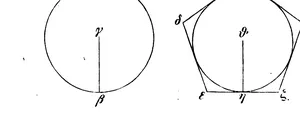
Proposition 2: Circle Exceeds Isoperimetric Regular Polygons

Proposition 2: Cyclic Triangle Centroid Invariance
10. (IV) What was deferred shall now be proved. For let ΓΔ be to ΔΘ as ΓΕ is to ΕΚ, and let ΔΕ and ΘΚ be joined cutting each other at Λ; [we must prove] that ΘΛ is equal to ΚΛ, and that the ratio of ΔΛ to ΛΕ is compounded of that of ΔΘ to ΘΓ and that of ΓΚ to ΚΕ.
Πρότασις β΄ · Κύκλος παντὸς ἰσοπεριμέτρου πολυγώνου μείζων
5. β΄. Ἔστω πάλιν τὸ πολύγωνον τὸ ΑΒΓ ἰσόπλευρόν τε καὶ ἰσογώνιον ἴσην ἔχον τὴν περίμετρον τῇ τοῦ ΔΕΖ κύκλου περιφερείᾳ· λέγω ὅτι μείζων ἐστὶν ὁ ΔΕΖ κύκλος τοῦ ΑΒΓ πολυγώνου.
Πρότασις β΄ · Ταὐτότης τοῦ κέντρου βάρους ἐγγεγραμμένου τριγώνου
10. δ΄. Τὸ δὲ ὑπερτεθὲν νῦν δειχθήσεται. ἔστω γὰρ ὡς ἡ ΓΔ πρὸς ΔΘ, ἡ ΓΕ πρὸς ΕΚ, καὶ ἐπεζεύχθωσαν αἱ ΔΕ ΘΚ τέμνουσαι ἀλλήλας κατὰ τὸ Λ· ὅτι ἴση μέν ἐστιν ἡ ΘΛ τῇ ΚΛ, ὁ δὲ τῆς ΔΛ πρὸς ΛΕ λόγος σύγκειται ἔκ τε τοῦ τῆς ΔΘ πρὸς ΘΓ καὶ τοῦ τῆς ΓΚ πρὸς ΚΕ.
Πρότασις ιϛ΄ · Περὶ τοῦ ὕψους ἑνὸς ἐγγεγραμμένου κύκλου
23. ιϛ΄. Δύο ἡμικύκλια τὰ ΒΗΓ ΒΕΔ, καὶ ἐφαπτόμενος αὐτῶν κύκλος ὁ ΕΖΗΘ, ἀπὸ δὲ τοῦ κέντρου αὐτοῦ τοῦ Α κάθετος ἤχθω ἐπὶ τὴν ΒΓ βάσιν τῶν ἡμικυκλίων ἡ ΑΜ· ὅτι ἐστὶν ὡς ἡ ΜΒ πρὸς τὴν ἐκ τοῦ κέντρου τοῦ ΕΖΗΘ
Τὸ κεντροβαρικὸν θεώρημα (Πάππου–Γουλδίνου)
41. [ταῦθʼ οἱ
Τῶν δύο μέσων ἀνάλογον εὕρεσις · Ἐρατοσθένης, Νικομήδης, Ἥρων καὶ Πάππος
22. Ἐκθησόμεθα οὖν τέσσαρας αὐτοῦ κατασκευὰς μετά τινος ἐμῆς ἐπεξεργασίας, ὧν πρώτην μὲν τὴν Ἐρατοσθένειον, δευτέραν δὲ τὴν τῶν περὶ Νικομήδη, τρίτην δὲ τὴν τῶν περὶ Ἥρωνα μάλιστα πρὸς τὰς χειρουργίας ἁρμόζουσαν τοῖς ἀρχιτεκτονεῖν βουλομένοις, καὶ τελευταίαν τὴν ὑφʼ ἡμῶν ἀνευρημένην. [στερεοῦ γὰρ παντὸς ἕτερον στερεόν, ὅμοιον τῷ δοθέντι, κατασκευάζεται πρὸς τὸν δοθέντα λόγον, ἐὰν δύο τῶν δοθεισῶν εὐθειῶν δύο μέσαι κατὰ τὸ συνεχὲς ἀνάλογον ληφθῶσιν, ὡς Ἥρων ἐν μηχανικοῖς καὶ καταπαλτικοῖς.]
Book IV · Generalized Area Theorem & The Arbelos Circle Chain
“And this theorem is far more universal than that proved in the Elements concerning squares on right-angled triangles.”
—Pappus of Alexandria, Synagoge Book IV, Proposition 1
Critique of the Semicircle Claim and Definitions of the Three Medieties
28. Now the second of the problems was this. Someone else claimed to take the three medieties in a semicircle, and setting out semicircle \(AB\Gamma\), whose center is \(E\), and taking any point \(\Delta\) on \(A\Gamma\), and drawing \(\Delta B\) at right angles to \(E\Gamma\) from it, and joining \(EB\), and drawing \(\Delta Z\) perpendicular to it from \(\Delta\), he asserted simply that the three medieties were set forth in the semicircle: \(E\Gamma\) the arithmetic mean, \(\Delta B\) the geometric mean, and \(BZ\) the harmonic.
Definitions of the Three Medieties · Neo-Pythagorean Notes
As Nicomachus of Gerasa records in his Introduction to Arithmetic (II.22–28), the early Pythagoreans recognized only these three medieties (calling the harmonic the sub-contrary mean in music theory), before later geometers cataloged all ten forms (Chs. 44–46).
Definitions of the Three Medieties · Summary
Arithmetic: \(\frac{a - A}{A - b} = \frac{a}{a} \implies A = \frac{a + b}{2}\).
Proposition 129 · Cross-Ratio History Notes
Proposition 129 (Hultsch Chs. 196–197, Hultsch II, pp. 870–872, Greek folios hultsch_1877_vol2:0416 and 0418) is Lemma III of the 38 lemmas Pappus provided for Euclid's Porisms. Pappus supplies two proofs: a first demonstration (Ch. 196) eliminating the auxiliary rectangle \(EZ \cdot H\Theta\), and an alternative proof (Ch. 197) directly via compound ratios (διὰ τοῦ συνημμένου). Michel Chasles (Aperçu historique, 1837; Les trois livres de Porismes d’Euclide, 1860) recognized this ratio as the rapport anharmonique (cross-ratio) governing projective geometry.
Proposition 129 · Cross-Ratio Invariance Summary
Under any central projection from apex \(O\) mapping collinear points \(A, B, C, D\) onto \(A', B', C', D'\), \(\operatorname{CR}(A, B; C, D) = \operatorname{CR}(A', B'; C', D')\), verified identically in geometor.pappus.cross_ratio() and geometor.pappus.project_point().
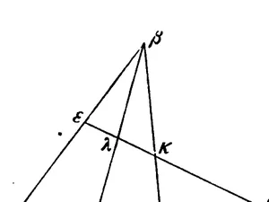
Proposition 129: Cross-Ratio Invariance Across Central Projection

Proposition 17 · Inductive Step Summary
Recurrence relation: \(\frac{y_{n+1}}{d_{n+1}} = \frac{y_n}{d_n} + 1\).
Proposition 17 · Recurrence Notes
Proposition 17 is the deductive heart of Pappus's synthetic proof: it increments the dimensionless altitude-to-diameter ratio \(y_n / d_n\) by exactly \(+1\) at each tangent transition.
Proposition 17: Adjacent Circle Altitude Recurrence
Proposition 3 · Commentary Notes
Props. 3–8 complete Pappus’s geometric statics of polygons and compound laminas before Proposition 9 introduces equilibrium on an inclined plane.
Proposition 3 · Similar Centroid Scaling Summary
Cross-joins between parallel bases \(\alpha\beta \parallel \delta\gamma\) intersect at centroid/similarity center \(\varepsilon\), preserving collinearity across transversals \(\zeta\theta\) and \(\varepsilon\eta\).
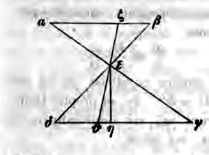
Proposition 3: Similar Centroid Triangles
Propositions 3–4 · Archimedean & Isoperimetric Lemmas Notes
Pappus supplies a self-contained exhaustion proof of Archimedes's Measurement of a Circle Prop. 1 in Chs. 6–8 (Hultsch I, pp. 312–316), then introduces the non-regular polygon cycle (Chs. 9–10, pp. 316–318). Plate 0249.g1 derives from Hultsch Vol. III, App. IV (p. 1237).
Propositions 3–4 · Circle Area & Triangle Lemma Summary
Chs. 6–8 (Prop. 3): Exhaustion via inscribed and circumscribed polygons proves \(\operatorname{Area}_{\text{circle}} = \frac{1}{2} C R\) independently of Archimedes.

Propositions 3–4: Area of the Circle & Triangle Construction Lemma
Περὶ τῶν τριῶν πρώτων μεσοτήτων · Ὅροι
28. Τὸ δὲ δεύτερον τῶν προβλημάτων ἦν τόδε. Ἐν ἡμικυκλίῳ τὰς τρεῖς μεσότητας λαβεῖν ἄλλος τις ἔφασκεν, καὶ ἡμικύκλιον τὸ ΑΒΓ ἐκθέμενος, οὗ κέντρον τὸ Ε, καὶ τυχὸν σημεῖον ἐπὶ τῆς ΑΓ λαβὼν τὸ Δ, καὶ ἀπʼ αὐτοῦ πρὸς ὀρθὰς ἀγαγὼν τῇ ΕΓ τὴν ΔΒ, καὶ ἐπιζεύξας τὴν ΕΒ, καὶ αὐτῇ κάθετον ἀγαγὼν ἀπὸ τοῦ Δ τὴν ΔΖ, τὰς τρεῖς μεσότητας ἔλεγεν ἁπλῶς ἐν τῷ ἡμικυκλίῳ ἐκτεθεῖσθαι, τὴν μὲν ΕΓ μέσην ἀριθμητικήν, τὴν δὲ ΔΒ μέσην γεωμετρικήν, τὴν δὲ ΒΖ ἁρμονικήν.
Προτάσεις γ΄–δ΄ · Ὅμοια τρίγωνα καὶ κέντρα βάρους
11. ε΄. Τὸ λοιπὸν τῶν ὑπερτεθέντων. ἔστω παράλληλος ἡ ΑΒ τῇ ΓΔ, καὶ ὡς ἡ ΑΖ πρὸς ΖΒ, ἡ ΓΘ πρὸς ΘΔ, καὶ ἐπεζεύχθωσαν αἱ ΑΓ ΒΔ τέμνουσαι ἀλλήλας κατὰ τὸ Ε σημεῖον· ὅτι ἡ διὰ τῶν Ζ Ε Θ εὐθεῖά ἐστιν.
Πρότασις γ΄–δ΄ · Τὸ ἐμβαδὸν τοῦ κύκλου καὶ τὸ τριγώνου λῆμμα
6. γ΄. Ὅτι μὲν οὖν τὸ ὑπὸ τῆς περιμέτρου τοῦ κύκλου καὶ τῆς ἐκ τοῦ κέντρου διπλάσιόν ἐστι τοῦ κύκλου
Πρότασις ιζ΄ · Ἀναλογία τῶν ἐφεξῆς ἐφαπτομένων κύκλων
25. ιζ΄. Τῶν αὐτῶν ὑποκειμένων γεγράφθω κύκλος ὁ ΘΡΤ ἐφαπτόμενος τῶν τε ἐξ ἀρχῆς ἡμικυκλίων καὶ τοῦ ΕΗΘ κύκλου κατὰ τὰ Θ Ρ Τ σημεῖα, καὶ ἀπὸ τῶν Α Π κέντρων κάθετοι ἤχθωσαν ἐπὶ τὴν ΒΓ βάσιν αἱ ΑΜ ΠΝ· λέγω ὅτι ἐστὶν ὡς ἡ ΑΜ μετὰ τῆς διαμέτρου τοῦ ΕΗ κύκλου πρὸς τὴν διάμετρον αὐτοῦ, οὕτως ἡ ΠΝ πρὸς τὴν τοῦ ΘΡΤ κύκλου διάμετρον.
Πρότασις ρκθ΄ · Ἀναλλοίωτον τοῦ διπλοῦ λόγου
196. γ΄. Εἰς τρεῖς εὐθείας τὰς ΑΒ ΓΑ ΔΑ διήχθωσαν δύο εὐθεῖαι αἱ ΘΕ ΘΔ· ὅτι ἐστὶν ὡς τὸ ὑπὸ ΘΕ ΗΖ πρὸς τὸ ὑπὸ ΘΗ ΖΕ, οὕτως τὸ ὑπὸ ΘΒ ΔΓ πρὸς τὸ ὑπὸ ΘΔ ΒΓ.
Book V · On the Geometric Forethought of Bees & Isoperimetry
“The bees, possessing no instruction from geometry, fashion the honeycombs in which they store the celestial dew according to a marvelous geometric forethought.”
—Pappus of Alexandria, Synagoge Book V, Chapter 1
Proposition 131 · Harmonic Conjugates Summary
In Pappus’s Ch. 199 (\(\operatorname{Prop. 131}\)), the harmonic hypothesis \(A\Delta : \Delta\Gamma = AB : B\Gamma\) forces collinearity of the transversal \(AH\Theta\) across the complete quadrilateral.
Proposition 131 · Non-Metric Projective Notes
Pappus VII.131 (Hultsch Ch. 199, Hultsch II, pp. 874–876, Greek folios hultsch_1877_vol2:0420 and 0422) is Lemma V to Euclid's Porisms and the earliest recorded proof that the harmonic division \(A\Delta : \Delta\Gamma = AB : B\Gamma\) on a complete quadrilateral yields collinear diagonal points \(A, H, \Theta\)—used by Karl von Staudt (Geometrie der Lage, 1847) to found projective geometry without metric axioms.
Proposition 131: Complete-Quadrilateral Harmonic Conjugates
Proposition 18 · Exact Rational Coordinates & Focal Ellipse
Constructed in geometor.pappus.construct_pappus_arbelos_chain() for \((r_1, r_2) = (2, 1)\):
Proposition 18 · Infinity in Ancient Synthetic Proof
Pappus's closing formula καὶ τοῦτο συμβαῖνον ἐπὶ τὸ ἄπειρον ἀποδειχθήσεται (and this will be demonstrated as occurring without end) is one of the clearest explicit examples of complete mathematical induction (base step via Prop. 16, inductive transition \(n \to n+1\) via Prop. 17) in classical antiquity, followed in Ch. 27 by the limiting straight-line boundary cases.
Proposition 18: Induction for the Infinite Circle Chain
Proposition 4 · Triangle Symmetrization Summary
Fixed base \(|B\Gamma| = c\), fixed side sum \(|BA| + |A\Gamma| = s\): the vertex locus is an ellipse with foci \(B, \Gamma\), whose maximum altitude occurs uniquely on the perpendicular bisector (\(|BA| = |A\Gamma| = s/2\)), with area monotonic in symmetry.
Proposition 4 · Variational & Ellipse Notes
Plate 0157.g1 comes from Hultsch's edition of Anonymi De Figuris Isoperimetris (Vol. III, p. 1145), illustrating Zenodorus and Pappus's triangle symmetrization argument (Ch. 11, Hultsch I pp. 318–322) that underpins equilateralization and Steiner's 1838 four-hinge proof.
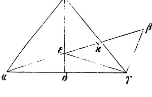
Proposition 4: Isosceles Triangle Area Extremum
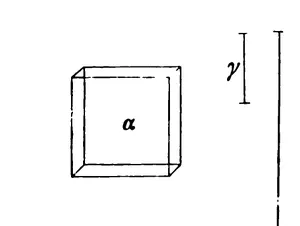
Proposition 9 · Inclined Plane Model Summary
Pappus equates equilibrium of weight \(W\) at slope angle \(\alpha\) with a horizontal lever across sphere radius \(E L\), compounding horizontal traction \(C\) with lever arm \(1 - \sin\alpha\).
Proposition 9 · Pappus vs. Stevin & Galileo Notes
Pappus VIII.9 differs from the exact frictionless sine law (\(F = W \sin\alpha\)) established by Jordanus de Nemore, Simon Stevin (1586, Clootcrans), and Galileo (Le Meccaniche, c. 1600), yet it was directly through critiquing Commandino’s Latin translation of Prop. 9 that Galileo sharpened Renaissance statics.
Proposition 9: Equilibrium on the Inclined Plane
The Three Means · Philological & Cross-Corpus Notes
As Nicomachus of Gerasa records in his Introduction to Arithmetic (II.22–28), the early Pythagoreans recognized only three means: arithmetic, geometric, and harmonic. Eudoxus and later geometers expanded this to ten medieties.
The Three Means · Symbolic Invariants & Algebraic Decomposition
Given: Two unequal straight line segments \(AD = a\) and \(DC = b\) (\(a < b\)) placed contiguously along a common diameter \(AC = a + b\).
Three Classical Means in a Single Semicircle
31. First let it be required, given \(AB\), \(B\Gamma\), to find a mean according to geometric proportion. Let \(\Gamma\Delta\) be drawn at right angles, and let \(AB\) be bisected at \(E\), and with center \(E\) let an arc described through \(B\) cut the perpendicular at \(\Delta\), and equal to the join \(B\Delta\) let \(BZ\) be cut off, and \(BZ\) becomes the sought mean. For \(\Delta A\) joined contains a right angle with \(B\Delta\), because each of \(BE\), \(EA\) equals the join \(\Delta E\). And the angle at \(\Gamma\) is also right. Therefore triangle \(AB\Delta\) is equiangular with \(B\Gamma\Delta\), and therefore the sides about their common angle at \(B\) are proportional: thus \(AB : \Delta B = B\Delta : B\Gamma\), and \(B\Delta\), equal to \(BZ\), is a mean between \(AB\), \(B\Gamma\).
Αἱ τρεῖς μεσότητες ἐν ἑνὶ ἡμικυκλίῳ
31. Ἔστω δὴ πρῶτον δοθεισῶν τῶν ΑΒ ΒΓ μέσην εὑρεῖν κατὰ τὴν γεωμετρικὴν ἀναλογίαν. Ἤχθω πρὸς ὀρθὰς ἡ ΓΔ, καὶ δίχα τετμήσθω ἡ ΑΒ τῷ Ε, καὶ περὶ κέντρον τὸ Ε διὰ τοῦ Β περιφέρεια γραφεῖσα τεμνέτω τὴν πρὸς ὀρθὰς κατὰ τὸ Δ, καὶ τῇ τὰ Β Δ ἐπιζευγνούσῃ ἴση ἀφῃρήσθω ἡ ΒΖ, καὶ γίνεται ἡ ζητουμένη μέση ἡ ΒΖ. ἐπιζευχθεῖσα γὰρ ἡ ΔΑ ὀρθὴν περιέχει γωνίαν μετὰ τῆς ΒΔ διὰ τὸ ἴσην εἶναι ἑκατέραν τῶν ΒΕ ΕΑ τῇ ἐπιζευγνούσῃ τὰ Δ Ε. ἔστιν δὲ καὶ ἡ πρὸς τῷ Γ ὀρθή. καὶ ἰσογώνιον ἄρα τὸ ΑΒΔ τρίγωνον τῷ ΒΓΔ, καὶ διὰ τοῦτο αἱ περὶ τὴν κοινὴν αὐτῶν γωνίαν τὴν πρὸς τῷ Β πλευραὶ ἀνάλογόν εἰσιν· ὡς ἄρα ἡ ΑΒ πρὸς ΔΒ, ἡ ΒΔ πρὸς ΒΓ, καὶ μέση τῶν ΑΒ ΒΓ ἡ ΒΔ ἴση τῇ ΒΖ.
Πρότασις ε΄ · Τὸ ἰσοσκελὲς τρίγωνον μέγιστον ἐπὶ τῆς αὐτῆς βάσεως
11. ε΄. Τῶν ἰσοπεριμέτρων τριγώνων καὶ τὴν αὐτὴν βάσιν ἐχόντων τὸ ἰσοσκελὲς μέγιστόν ἐστιν, καὶ ἀεὶ τὸ ἰσοσκελέστερον μεῖζον.
Πρότασις θ΄ · Ἐπὶ τοῦ κεκλιμένου ἐπιπέδου
17. ι΄. Βάρους δοθέντος ὑπὸ δοθείσης ἀγομένου δυνάμεως ἐν τῷ παρὰ τὸν ὁρίζοντα ἐπιπέδῳ καὶ ἑτέρου ἐπιπέδου κεκλιμένου πρὸς τὸ ὑποκείμενον δοθεῖσαν γωνίαν ὑποτιθέντος, εὑρεῖν τὴν δύναμιν ὑφ᾽ ἧς ἀχθήσεται τὸ βάρος ἐν τῷ κεκλιμένῳ ἐπιπέδῳ.
Πρότασις ιη΄ · Ἡ ἐπὶ τὸ ἄπειρον ἐπαγωγὴ τῶν κύκλων
26. ιη΄. Τούτων προτεθεωρημένων ὑποκείσθω ἡμικύκλιον τὸ ΒΗΓ ((O0, A)), καὶ ἐπὶ τῆς βάσεως αὐτοῦ τυχὸν σημεῖον εἰλήφθω τὸ Δ (D), καὶ ἐπὶ τῶν ΒΔ ΔΓ ἡμικύκλια γεγράφθω τὰ ΒΕΔ ((O1, A)) ΔΥΓ ((O2, D)), καὶ ἐγγεγράφθωσαν εἰς τὸν μεταξὺ τόπον τῶν τριῶν περιφερειῶν τὸν καλούμενον ἄρβηλον κύκλοι ἐφαπτόμενοι τῶν ἡμικυκλίων καὶ ἀλλήλων ὁσοιδηποτοῦν, ὡς οἱ περὶ τὰ κέντρα τὰ Α (K1) Π (K2) Ο (K3), καὶ ἀπὸ τῶν κέντρων αὐτῶν κάθετοι ἐπὶ τὴν ΒΓ ἤχθωσαν αἱ ΑΜ (P1K1) ΠΝ (P2K2) ΟΣ (P3K3)· λέγω ὅτι ἡ μὲν ΑΜ ἴση ἐστὶν τῇ διαμέτρῳ τοῦ περὶ τὸ Α κύκλου, ἡ δὲ ΠΝ διπλῆ τῆς διαμέτρου τοῦ περὶ τὸ Π κύκλου, ἡ δὲ ΟΣ τριπλῆ τῆς διαμέτρου τοῦ περὶ τὸ Ο κύκλου, καὶ αἱ ἑξῆς κάθετοι τῶν οἰκείων διαμέτρων πολλαπλάσιαι κατὰ τοὺς ἑξῆς μονάδι ἀλλήλων ὑπερέχοντας ἀριθμούς.
Πρότασις ρλα΄ · Ἁρμονικὴ τομὴ ἐπὶ τετραπλεύρου
199. ε΄. Ἐὰν ᾖ καταγραφὴ ἡ ΑΒΓΔΕΖΗΘ, γίνεται ὡς ἡ ΑΔ πρὸς τὴν ΔΓ, οὕτως ἡ ΑΒ πρὸς τὴν ΒΓ. ἔστω οὖν ὡς ἡ ΑΔ πρὸς τὴν ΔΓ, οὕτως ἡ ΑΒ πρὸς τὴν ΒΓ· ὅτι εὐθεῖά ἐστιν ἡ διὰ τῶν Α Η Θ.
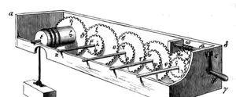
Baroulkos Gear Train · Mechanical Advantage Summary
Input Power / Output Burden: \(P = 5\) talents lifting \(W = 1{,}000\) talents (\(200 : 1\)).
Baroulkos · Greek Witness to Hero’s Mechanics Notes
Because Hero's three-book Mechanics survives complete only in Qusṭā ibn Lūqā’s Arabic translation, Pappus VIII.10–11 (with its engravings 0071.g1 and 0074.g1) is our most precious extant Greek witness to ancient mechanical engineering and preserves Archimedes’s «δός μοι ποῦ στῶ καὶ κινῶ τὴν γῆν».
Golden Means · Algebraic Invariants & SymPy Closure
In geometor.pappus.construct_three_means() with parameters \(a = 1\) and \(b = \phi^2\):
Golden Means · Historical Commentary
The extreme and mean ratio (Euclid Elements VI.def.3) appears naturally in the regular pentagon (Elements IV.10–11) and the Platonic solids (Elements XIII.13–18). In the GEOMETOR platform, this golden specialization provides a direct bridge between Pappus’s semicircle medieties and geometor/divine.
Golden-Section Specialization in Q(phi)
When the diameter segments stand in the square of the golden ratio, \(a = 1\) and \(b = \phi^2 = \phi + 1\) (where \(\phi = \frac{1 + \sqrt{5}}{2}\)), the total diameter has length \(1 + \phi^2 = \phi + 2 = \sqrt{5}\,\phi\), and Pappus’s semicircle exhibits algebraic closure over \(\mathbb{Q}(\phi)\):
Proposition 138 · Affine Limit & Hessenberg Notes
Prop. 138 (Hultsch Ch. 206, Hultsch II, p. 884, Greek folio hultsch_1877_vol2:0430; Lemma XII to Euclid's Porisms) represents the affine limit (\(\ell_\infty\)) of Prop. 139, standing at the center of Gerhard Hessenberg’s 1905 proof that Pappus’s theorem implies Desargues’s theorem in any projective plane. In Hultsch’s Greek text, lines 12–13 omit the explicit intersection \(M\) of \(A\Delta\) and \(B\Gamma\) (supplied in the facing Latin from Simson), and line 26 brackets the scholium referring back to Lemma X.
Proposition 138 · Parallel Hexagon Summary
When carriers \(a \parallel b\) (\(AB \parallel \Gamma\Delta\) in Ch. 206), their intersection \(O\) lies at infinity (\(O \to \infty\)).
Proposition 138: Pappus Hexagon on Parallel Carriers
Propositions 10–11: Archimedes’s Lever Saying and Hero’s Baroulkos
Propositions 6–7 · Commentary Notes
Chs. 12–14 (Hultsch I, pp. 322–328) prove the two-triangle similarity extremum required for Ch. 19 (Prop. 10), while archival plate 0154.g1 (Hultsch III, p. 1142) illustrates Zenodorus's reduction to regular polygons.
Propositions 6–7 · Similar Triangles & Area Sum Summary
Ch. 12 (Prop. 6): For similar right triangles \((a_1, b_1, c_1)\) and \((a_2, b_2, c_2)\), \((c_1 + c_2)^2 = (a_1 + a_2)^2 + (b_1 + b_2)^2\).

Propositions 6–7: Similar Right & Isosceles Triangle Sums
Προτάσεις ι΄–ια΄ · Ὁ Βαρουλκὸς τοῦ Ἥρωνος καὶ αἱ πέντε δυνάμεις
19. ια΄. Τῆς αὐτῆς δέ ἐστιν θεωρίας τὸ δοθὲν βάρος τῇ δοθείσῃ δυνάμει κινῆσαι· τοῦτο γὰρ Ἀρχιμήδους μὲν εὕρημα [λέγεται] μηχανικόν, ἐφ᾽ ᾧ λέγεται εἰρηκέναι· δός μοί (φησι) ποῦ στῶ καὶ κινῶ τὴν γῆν. Ἥρων δὲ ὁ Ἀλεξανδρεὺς πάνυ σαφῶς αὐτοῦ τὴν κατασκευὴν ἐξέθετο ἐν τῷ καλουμένῳ βαρουλκῷ, λῆμμα λαβὼν ὅπερ ἐν τοῖς μηχανικοῖς ἀπέδειξεν, ἔνθα καὶ περὶ τῶν ε΄ δυνάμεων διαλαμβάνει, τουτέστιν τοῦ τε σφηνὸς καὶ μοχλοῦ καὶ κοχλίου καὶ πολυσπάστου καὶ ἄξονος ἐν τῷ περιτροχίῳ, δι᾽ ὧν τὸ δοθὲν βάρος τῇ δοθείσῃ δυνάμει κινεῖται [καθ᾽ ἑκάστην δύναμιν]. ἐν δὲ τῷ βαρουλκῷ διὰ τυμπάνων ὀδοντωτῶν παραθέσεως ἐκίνει τὸ δοθὲν βάρος τῇ δοθείσῃ δυνάμει, τῆς διαμέτρου τοῦ τυμπάνου πρὸς τὴν διάμετρον τοῦ ἄξονος λόγον ἐχούσης ὃν ε΄ πρὸς α΄, τοῦ κινουμένου βάρους ὑποκειμένου ταλάντων χιλίων, τῆς δὲ κινούσης δυνάμεως ὑποκειμένης ταλάντων ε΄.
Πρότασις ρλη΄ · Παράλληλοι εὐθεῖαι
206. ιβ΄. Ἀποδεδειγμένων νῦν τούτων ἔσται δεῖξαι ὅτι, ἐὰν παράλληλοι ὦσιν αἱ ΑΒ ΓΔ, καὶ εἰς αὐτὰς ἐμπίπτωσιν εὐθεῖαί τινες αἱ ΑΔ ΑΖ ΒΓ ΒΖ, καὶ ἐπιζευχθῶσιν αἱ ΕΔ ΕΓ, [ὅτι] γίνεται εὐθεῖα ἡ διὰ τῶν Η Μ Κ.
Πρότασις ϛ΄–ζ΄ · Ὅμοια ὀρθογώνια καὶ ἰσοσκελῆ τρίγωνα
12. ϛ΄. Πάλιν ἔστω δύο τρίγωνα ὀρθογώνια ὅμοια τὰ ΑΒΓ ΔΕΖ ἴσας ἔχοντα τὰς Γ Ζ γωνίας· λέγω ὅτι τὸ ἀπὸ ΑΓ ΔΖ ὡς μιᾶς ἴσον ἐστὶ τῷ τε ἀπὸ ΒΓ ΕΖ ὡς μιᾶς καὶ τῷ ἀπὸ ΑΒ ΔΕ ὡς μιᾶς.
Ἡ τοῦ χρυσοῦ λόγου ἰδιότης ἐν τῷ ἡμικυκλίῳ
Ἐὰν αἱ \(AD, DC\) εὐθεῖαι λόγον ἔχωσιν ὃν ἔχει ἡ μονὰς πρὸς τὸ τοῦ χρυσοῦ λόγου τετράγωνον (\(a = 1, b = \phi^2\)), ἔσται ἡ μὲν γεωμετρικὴ μέση DB αὐτὸς ὁ χρυσοῦς λόγος \(\phi\), ἡ δὲ ἀριθμητικὴ μέση OB ἴση τῇ \(\frac{\phi + 2}{2}\), ἡ δὲ ἁρμονικὴ BF ἴση τῇ \(\frac{2\phi^2}{\phi + 2}\). καὶ γίνεται τὸ ὑπὸ τῆς ἀριθμητικῆς καὶ τῆς ἁρμονικῆς ἴσον τῷ ἀπὸ τῆς γεωμετρικῆς τετραγώνῳ (\(A \cdot H = \phi^2 = G^2\)).
Book VII · The Treasury of Analysis & Projective Lemmas
“That body of doctrine which is called the Treasury of Analysis, my son Hermodorus, is a specialized mathematical resource prepared for those who wish to acquire the power of discovering solutions to problems.”
—Pappus of Alexandria, Synagoge Book VII, Chapter 1
Proposition 139 · Intersecting Carriers Summary
In Pappus’s Ch. 207 (\(AB, \Gamma\Delta\) meeting at \(N\)), applying Lemma III (Prop. 129) from \(\Gamma\) and from \(\Delta\) equates the compound rectangle ratios along \(\Gamma M\Lambda\) and \(\Delta M\Theta\), reducing collinearity of \(H, M, K\) to Lemma X.
Proposition 139 · Pascal & Hilbert Commutativity Notes
In his 1640 broadside Essay pour les coniques, Blaise Pascal generalized Pappus’s two-line pair to any smooth conic (Hexagrammum Mysticum).
Proposition 139: Pappus’s General Hexagon Collinearity Theorem
Propositions 8–10 · Equiangularity Closure Summary
By Ch. 18 (Prop. 9), any maximal \(n\)-gon must be equilateral; by Ch. 15 (Prop. 8) and Ch. 19 (Prop. 10), any maximal equilateral \(n\)-gon must be equiangular (illustrated on pentagon \(\alpha\beta\gamma\delta\varepsilon\) in plate 0250.g1), whence the circle strictly exceeds all isoperimetric plane figures.
Propositions 8–10 · Extremal Synthesis Notes
Having closed the planar polygon hierarchy in Chs. 18–19 (Hultsch I, pp. 332–334), Pappus notes the bracketed scholium (Ch. 16) and short lacuna (Ch. 17) before turning to circular segments (Ch. 20) and later to solids (pp. 352–473). Plate 0250.g1 derives from Hultsch III, p. 1238.
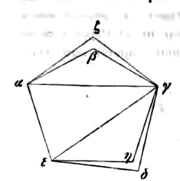
Propositions 8–10: Equilateral & Equiangular Polygon Extremum
Single-Compass & Five-Point Conics · Summary
Prop. 13 (Chs. 27–28): Restoring a damaged cylinder’s diameter using five coplanar points marked with one compass opening.
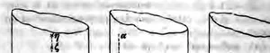
Single-Compass Constructions and Five-Point Conics
Instrumental Problem on a Cylinder.
Single-Compass Geometry · Islamic & Renaissance Notes
Pappus launches the single-compass tradition (Ch. 27) and uses Apollonius’s Conics for five-point ellipses (Props. 14–16), anticipating Renaissance rusty-compass constructions and Steiner’s projective theorem (Steiner 1832).
Προβλήματα ὀργανικὰ καὶ τὰ ἑνὶ διαστήματι γραφόμενα
Πρόβλημα ὀργανικὸν ἐπὶ κυλίνδρου.
Πρότασις η΄–ι΄ · Τὸ ἰσόπλευρον καὶ ἰσογώνιον πολύγωνον μέγιστον
15. η΄. Ἔστω ἐπὶ ἀνίσων βάσεων τῶν ΑΒ ΓΔ ἰσοσκελῆ τρίγωνα τὰ ΑΕΒ ΓΔΖ, καὶ ἡ μὲν ΑΕ τῇ ΓΖ ἴση ἔστω, ἡ δὲ ΑΒ τῆς ΔΓ μείζων (ἀνόμοια ἄρα τὰ τρίγωνα)· δεῖ δὴ ἐπὶ τῶν ΑΒ ΓΔ ὅμοια ἰσοσκελῆ τρίγωνα συστήσασθαι, ὥστε τὰς δ΄ πλευρὰς αὐτῶν ἅμα ἴσας εἶναι ταῖς ΑΕΒ ΓΖΔ ἅμα.
Πρότασις ρλθ΄ · Συμπίπτουσαι εὐθεῖαι
207. ιγ΄. Ἀλλὰ δὴ μὴ ἔστωσαν αἱ ΑΒ ΓΔ παράλληλοι, ἀλλὰ συμπιπτέτωσαν κατὰ τὸ Ν· ὅτι πάλιν εὐθεῖά ἐστιν ἡ διὰ τῶν Η Μ Κ.
Book VIII · Architectonic Mechanics & Inscribed Hexagons
“The science of mechanics, my son Hermodorus, being serviceable for many great matters in human life, has rightly been deemed worthy of the highest esteem by philosophers, and is zealously pursued by nearly all who devote themselves to mathematical learning.”
—Pappus of Alexandria, Synagoge Book VIII, Chapter 1
Proposition 23 · Analysis vs. Empirical Trial Notes
Pappus explicitly introduces Proposition 23 to illustrate how theoretical analysis frees the artisan from empirical trial-and-error (ἀνάλογον πεῖραν διαφεύγειν): instead of guessing the inscribed hexagon side repeatedly, exact geometric analysis delivers \(s_6 = R / \sqrt{7}\) directly (Hultsch III, p. 1097, archival diagram 0108.g1).
Proposition 23 · Seven Hexagons Symbolic Summary
In geometor.pappus.construct_honeycomb_isoperimetry() with hexagon side \(s_6 = 2\):
Proposition 23: Seven Congruent Regular Hexagons Inscribed in a Circle
42 (Prop. 23). Useful also are the constructions in what are properly called instrumental problems, and especially whenever, guided toward ease by analysis, they are able to escape analogous trial and error; as, for example, into a given circle to inscribe seven hexagons, one about the same center as the circle, and the remaining six described upon the sides of the middle one and having each its opposite side fitted into the circumference of the circle.
Πρότασις κγ΄ · Ἑπτὰ ἑξάγωνα εἰς κύκλον
42. κγ΄. Χρήσιμα καὶ τὰ ἐν τοῖς ἰδίως λεγομένοις ὀργανικοῖς καὶ μάλισθ᾽ ὅταν ἐπὶ τὸ εὔκολον ὑπὸ τῆς ἀναλύσεως χειραγωγούμενα τὴν ἀνάλογον πεῖραν διαφεύγειν δύνηται, οἷον εἰς τὸν δοθέντα κύκλον ἑπτὰ ἑξάγωνα ἐγγράψαι, τὸ μὲν περὶ τὸ αὐτὸ κέντρον τῷ κύκλῳ, τὰ δὲ λοιπὰ ἓξ ἀπὸ μὲν τῶν τοῦ μέσου πλευρῶν ἀναγεγραμμένα, τὰς δὲ ἀντικειμένας πλευρὰς ἔχοντα ἐνηρμοσμένας ἑκάστην εἰς τὴν τοῦ κύκλου περιφέρειαν.